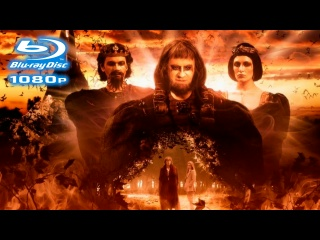
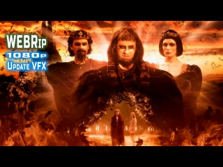
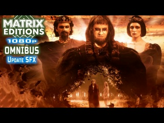
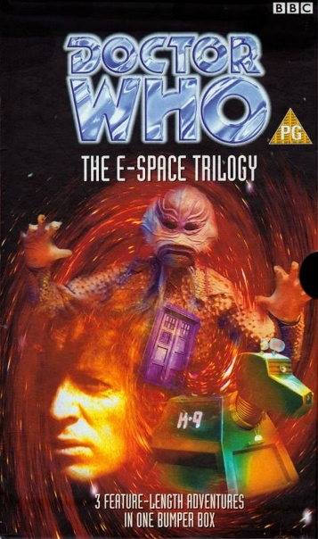
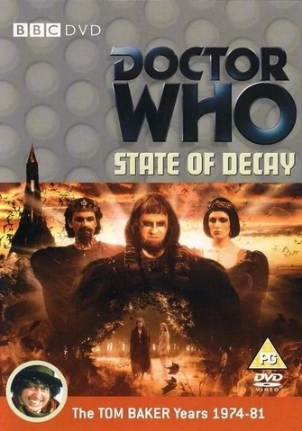
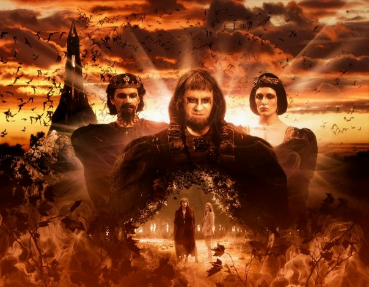

Субтитры: Русские и Английские |  |
|---|---|
с фанатским обновлением визуальных эффектов (cunningmunki) Субтитры: Русские и Английские |  |
с обновлением визуальных эффектов (cunningmunki) Субтитры: отсутствуют |  |
State of Decay
Дата выхода: 22 ноября - 13 декабря 1980
Формат: 4 эпизода по 25 мин.
| | |
Вторая часть Э-пространственной трилогии. ТАРДИС материализуется на планете, застывшей в средневековом упадке: крестьяне боятся ночи, а над ними правят Трое — загадочные владыки, живущие в башне и не выходящие на солнечный свет. Доктор быстро понимает: это вампиры. Но не просто вампиры — повелители времени, обращённые Великим Вампиром, одним из древнейших врагов Галлифрея, с которым повелители времени воевали на заре своей истории. Сценарий Терренса Дикса, изначально написанный ещё для 13-го сезона под названием «Крыса Сумерек» и отвергнутый BBC из-за темы вампиров — Грэм Уильямс побоялся сравнений с «Носферату». Джон Нейтан-Тёрнер вытащил его из архива и поставил как часть Э-пространственной трилогии. Атмосферная готика — и одна из самых стильных серий сезона.
 VHS+Boxset - ноябрь 1997 |   DVD+Boxset - 26 января 2009 |
|---|---|
 Blu-ray - 18 марта 2019 * Версия в нашей группе |  Blu-ray (сборник историй) - 9 ноября 2020 |
